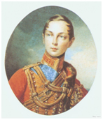
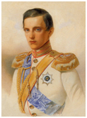
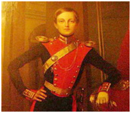
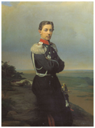
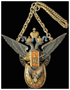

Дворец А.Д. Меньшикова на Васильевском острове в Санкт-Петербурге
Первый кадетский корпус под названием Корпус кадетов шляхетских (дворянских) детей (1732-1743) был учрежден указом императрицы Анны Иоанновны 29 июля 1731 г. и официально открыт в феврале 1732 г. Проект создания корпуса был разработан и представлен императрице генерал-прокурором Сената П.И. Ягужинским и президентом Военной коллегии графом Б.К. Минихом. Для размещения корпуса был выделен бывший дворец князя А.Д. Меншикова на Васильевском острове.
В ноябре 1731 г. был учрежден Устав корпуса, в соответствии с которым в него принимались исключительно дворяне, обученные грамоте. Выпускники корпуса предназначались для службы в пехотные и кавалерийские полки. При императрице Елизавете Петровне корпус был переименован в Сухопутный шляхетский кадетский корпус (1743-1766), а численность его воспитанников доведена до 490 человек. С восшествием на престол Екатерины II корпус получил новое наименование – Императорский Сухопутный шляхетский корпус (1766-1800) и подвержен серьезным организационным и структурным преобразованиям. Значительный вклад в воспитание и подготовку кадет Первого корпуса внес его Генеральный директор генерал-адъютант граф Ф.Е. Ангальт, в период руководства которого Екатерина II назвала корпус “рассадником великих людей”. Новый дух, полный патриотизма и серьезной военной подготовки, вдохнул в корус назначенный его Генеральным директором после смерти Ф.Е. Ангальта в то время генерал-поручик Михаил Илларионович Кутузов. В марте 1800 г. по указанию Павла I корпус был переименован в Первый кадетский корпус (1800-1864). При нем же (в 1798 г.) Генеральным директором корпуса был назначен великий князь Константин Павлович. Остававшийся на этом посту до своей кончины в 1831 г. После непродолжительного правления Павла I (1796-1801) вступивший на престол Александр I довел число воспитанников корпуса до 1 000 человек.
Несмотря на то, что корпус приняла в свое непосредственное ведение еще Екатерина II, практика числитьв корпусе сыновей, внуков и других родственников российских императоров сложилась в основном в период правления Николая I,при котором в корпусе числились цесаревич Великий князь Александр Николаевич, Великие князья Константин Николаевич (1837), Николай Николаевич (1839), Михаил Николаевич (1840). В списках корпуса было повелено числить Великого князя Николая Александровича – внука императора (1843). Последним августейшим кадетом Первого коруса был наследник цесаревич Алексей Николаевич.
Некоторые Августейшие кадеты:

Великий князь Александр Николаевич

Великий князь Константин Николаевич

Великий князь Михаил Николаевич

Великий князь Николай Александрович
АлександрII после вступления на престол принял на себя звание Шефа корпуса с сохранением на всех погонах шефской роты вензеля Николая I. В его царствование в списки корпуса были последовательно зачислены наследник цесаревич Николай Александрович, великие князья Александр Александрович и Владимир Александрович, принц Ольденбургский.
В 1864 г. Первый кадетский корпус был преобразован в Первую Санкт-Петербургскую военную гимназию (1864-1882). Ему пришлось отказаться от старшинства первого военно-учебного заведения России и передать его 1-му Павловскому военному училищу, которому заодно были переданы знамена, все реликвии корпуса, музей, архив и даже здание. Однако в 1882 г., при Александре III, Первый кадетский корпус был полностью восстановлен в своих правах (1882-1907) и получил свое прежнее название. К 1887 г. корпус был уже в своем историческом помещении. 17 февраля 1917 г. корпус отметил 175-летие. В этот день император Николай II принял на себя шефство над корпусом и повелевал впредь именовать его Первым Его Императорского Величества кадетским корпусом, 1-ю роту именовать Ротою Его Величества, а на погонах носить его вензель.

Жетон Первого Его Императорского Величества кадетского корпуса
За 175 лет в корпусе было воспитано 95 георгиевских кавалеров. Гордость корпуса были мраморные доски: черная – церковной усыпальнице с именами 276 погибших в сражениях выпускниках; белая – в Соборном зале – с именами георгиевских кавалеров и серая – с именами фельдмаршалов.
Летом 1917 г. корпус решением Временного правительства был переименован в гимназию военного ведомства. 6 марта 1918 г. первый кадетский корпус был окончательно расформирован. Его воспитанники создали за границей объединение кадет-выпускников Первого кадетского корпуса. В 1932 г. для празднования 200-летия корпуса в Париже собрались около 300 бывших кадет.